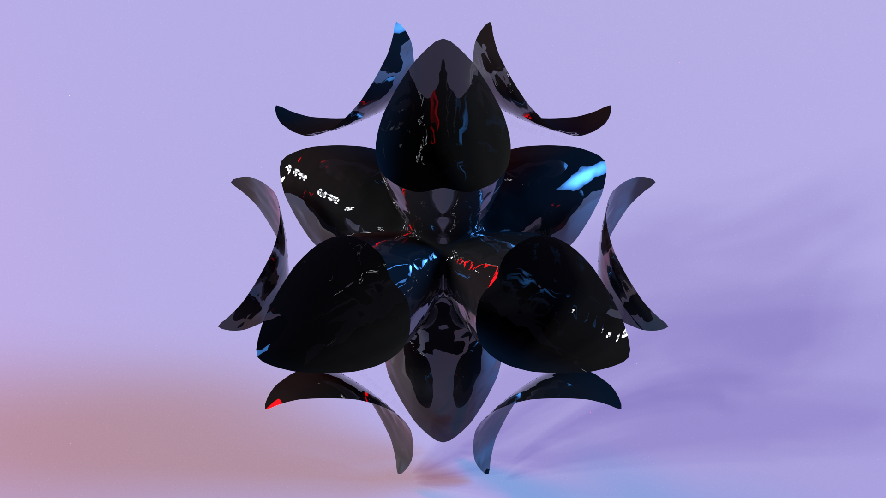
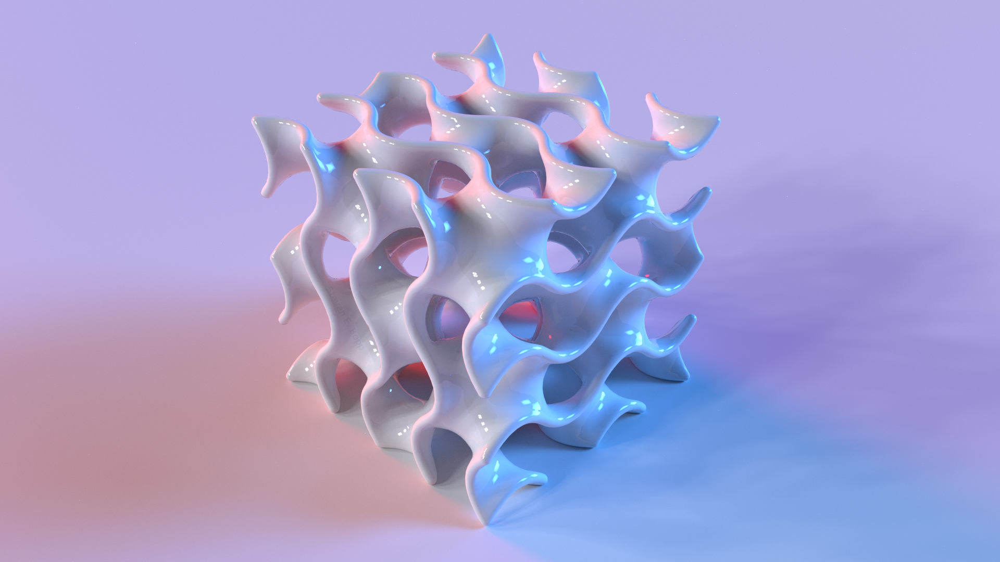
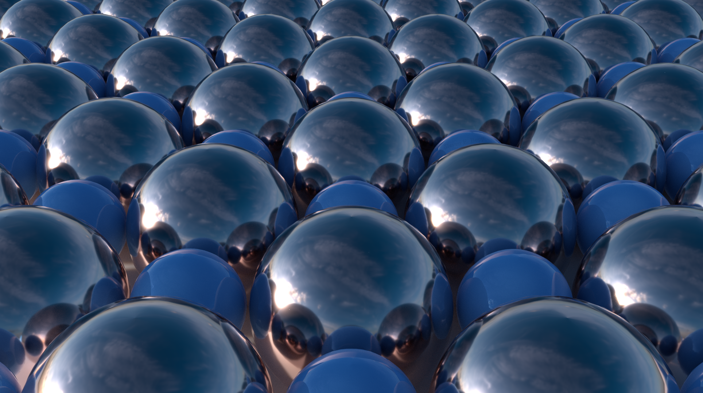

Fermi surface of ZrN in the primitive cell. Calculated with QuantumEspresso, exported to .stl with the Firmi code and OpenSCAD, rendered with Cycles in Blender.

Gyroid minimal surface studied for interest in creating mm-wave photonic crystals. Mesh provided by Thingiverse user moczys, rendered with Cycles in Blender.
A contour plot of the (110) pole figure for the Fm3m structure with the Brillouin zone of the unit cell in the center of the pole figure. Calculated with MTEX, rendered with Cycles in Blender.

Electron localization functions (front), and local ionic potentials (rear) along the (100) direction of TiN (left), and ZrN (right) calculated with Quantum Espresso (atomic radii scaled 50%)

Polymer encased silver nanocubes. Cover attempt, and press release for Light Sci. Appl. 8, 13 (2019)
Calculated dispersion surfaces with Fermi energy for an aluminum oxide, titanium nitride quantum well-based pulse limiter
A pair of prisms dispersing white light. Rendered with LuxCore unbiased raytracing in Blender.

(From left to right) The Cubic, Tetragonal, and Monoclinic phases of ZrO
Layers of (111) ZrN (top) having epitaxial registry with the c-axis of GaN (bottom)

A (100)-oriented Monolayer of TiN
Hex color representations of visible wavelengths in 10 nm increments (all done in GNUPlot)